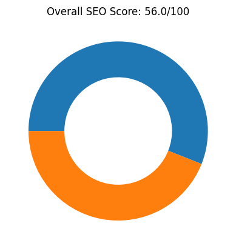
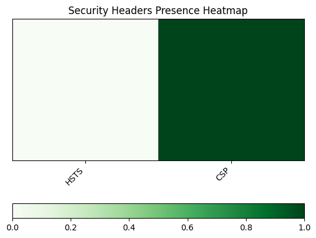
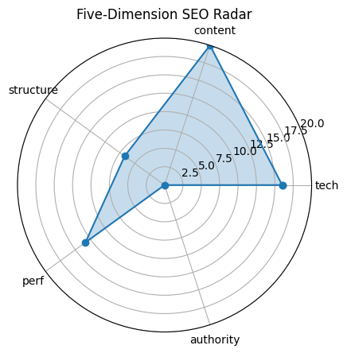

扫描时间 2025-05-21 15:18:27 |总分
56.0/ 100
æ ¸å¿ƒç»“è®ºï¼šThe website has a low overall SEO score of 56.0, with particularly poor performance in technical aspects, structure, and authority.
| 维度 | 得分 |
|---|---|
| tech | 16.0 |
| content | 20.0 |
| structure | 6.7 |
| perf | 13.3 |
| authority | 0 |

| æŒ‡æ ‡ | 实测 |
|---|---|
| HTTP çŠ¶æ€ | 200 |
| HSTS | False |
| CSP | True |
| robots.txt | 200 |
| Sitemap | 1 |

| æŒ‡æ ‡ | 实测 |
|---|---|
| H1 Count | 1 |
| H2 Count | 0 |
| H3 Count | 0 |
| Missing Alt Images | 0 |
| Text Ratio (%) | 22.65 |
| æŒ‡æ ‡ | 实测 |
|---|---|
| Internal Links | 11 |
| External Links | 1 |
| Nav Links | 0 |
| Schema Types | `` |


| æŒ‡æ ‡ | 实测 |
|---|---|
| LCP | 1.11 |
| FID/INP | 1105.61 |
| CLS | 0 |
| TTFB | None |

| æŒ‡æ ‡ | 实测 |
|---|---|
| Structured Data Count | 0 |
| Tech Stack | `` |

Improve technical SEO by fixing issues like missing canonical tags and increasing hreflang and social tags.
Enhance content structure by adding more headings (h2, h3) and increasing the text-to-HTML ratio.
Boost authority by acquiring backlinks and implementing structured data (schema markup).
Ensure better security by enabling HSTS and optimizing CSP headers.
Expand internal linking and ensure all external links are relevant and high-quality.